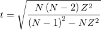

の計算は以下のように行われます。
の計算は以下のように行われます。
内容 |
Grubbs検定のダイアログボックスを開くには、メインメニューから以下のように選択します。
以下もご覧下さい。
| 結果ログの出力 |
結果を結果ログに出力するにはチェックします。 |
|---|---|
| 再計算 |
分析結果の再計算を制御します。
詳細は、以下をご覧下さい。分析結果の再計算 |
| 入力 |
列または列範囲である必要があります。 範囲制御についてはこちらを確認してください：入力データを指定する |
| 有意水準 |
オプションリスト:
|
| 外れ値のグラフ |
外れ値のグラフを作成する時に選択します。上側/下側の信頼区間とデータセットの平均値の折れ線グラフ付きの散布図が作成されます。 |
| Grubbsプロットデータ |
外れ値のグラフデータを出力するためのワークシート範囲を指定します(外れ値のグラフが選択されているときに有効)。フラットシートに上側/下側信頼区間をリストします。 範囲制御についてはこちらを確認してください：結果の出力 |
| Grubbsのレポート |
レポート表を出力するワークシート範囲を示します。 |
1.Grubbs検定統計量 の計算は以下のように行われます。

ここで、 は疑わしいポイント(通常、最大値か最小値のデータ)の値、 はデータセットの平均値、 は標準偏差です。
は標準偏差です。
と棄却限界値を比較します。
2.p値の計算は以下のように行われます。

ここで、 は最大の で、
は最大の で、 は標本数を表します。
は標本数を表します。
p 値はその後、 値のスチューデントt分布について、両側の値を元に計算します。
値のスチューデントt分布について、両側の値を元に計算します。
データ範囲内の欠損値は、分析には含まれません。
Stephen L R. Ellison, Vicki J. Barwick and Trevor J Duguid.Farrant.2009.Practical Statistics for the Analytical Scientist.The Royal Society of Chemistry, Cambridge, UK.